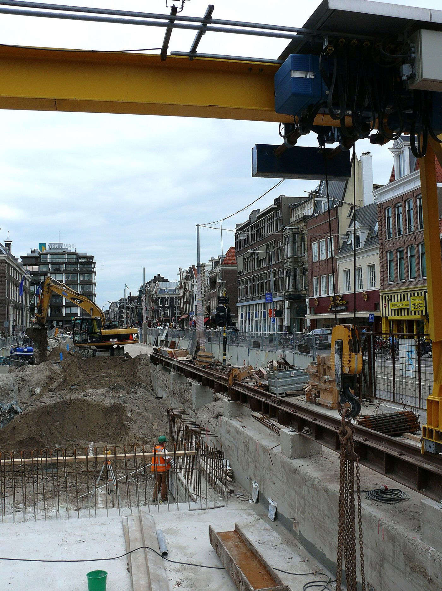

Civil engineering · study notes
Revise the essentials,
quietly.
Civil Hub gathers the core ideas of civil engineering into calm, compact pages — one per subject, each with the formulas, a worked example and a short self-check.

About the library
What this isA small library for a large syllabus.
Civil engineering rewards people who can still remember the idea underneath the calculation. Civil Hub is a personally curated revision library: it takes the foundation and core subjects of a civil engineering degree and reduces each one to a single, readable page.
Every page follows the same rhythm. A short orientation tells you why the subject matters. The middle explains the governing ideas and formulas. A worked example shows the arithmetic. The self-check lets you find out whether you can actually retrieve it — which is a different skill from recognising it.
The notes are deliberately compact and are not a replacement for anything. They are what you read the week before an assessment, after the lectures and labs have done their work.
How to revise with it
Three movesRead the page once
Start with the summary and the section headings. You are rebuilding the map of the subject, not memorising prose.
Do the example by hand
Cover the solution, write the substitution yourself, then compare. Most marks are lost in the setup, not the algebra.
Answer the self-check
Answer before you reveal. Then mark the page as revised — progress is stored only in this browser, with no account and no tracking.
Subjects
Nine at a time · 42 pagesRevision is not re-reading. It is the act of retrieving something you already met.Civil Hub — a note to self
A note on use
Roughly 6.5 hours of quiet reading.
That is the whole library end to end. It is not meant to be read that way. Pick one subject, give it twenty minutes, close the page and try to explain it out loud. Then come back and test yourself.
If a page helps, keep it open beside your own notes. If it conflicts with your course material, your course material wins.